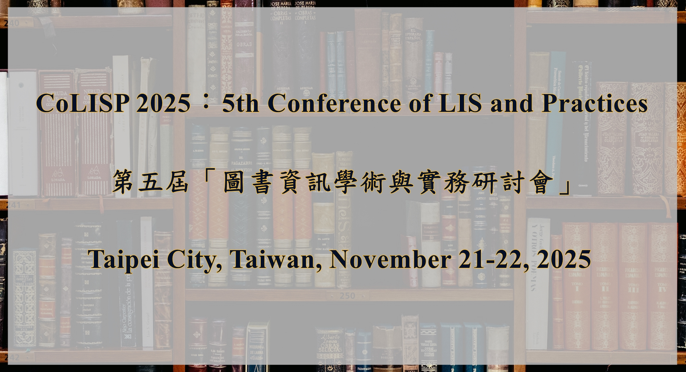

會議主旨
第五屆圖書資訊學術與實務研討會(5th Conference of LIS and Practices, CoLISP 2025)將邀集圖書館學與資訊科學、資訊科技之專家學者與專業實務工作者共襄盛舉，旨在搭建圖書資訊學者與實務工作者交流之平台，鼓勵與會者相互交流圖書資訊學研究與實務議題，促進我國圖書資訊學相關領域學術研究與圖書館事業實務之持續創新與發展。
隨著AI技術的迅速發展，圖書館和資訊服務機構面臨著前所未有的機遇與挑戰。與會者將可深入探討AI技術如何改變圖書館的運作模式，亦關注各類新科技在圖書資訊服務中所形成或解決的問題。因此，COLISP 2025將以「人工智慧驅動的圖書資訊服務：研究與實務的融合」為主題。
會議徵稿主題
CoLISP 2025之會議主題為「人工智慧驅動的圖書資訊服務：研究與實務的融合」，敬邀徵集下列（但不限）圖書資訊學領域研究與實務成果：
7. 資訊計量學
8. 資訊組織
9. 資訊檢索
10. 圖書資訊學教育
11. 圖書館永續發展
會議徵稿種類
| 類型 | 稿件規定 |
|---|---|
| 學術論文 | 8-10頁 |
| 博士生論壇論文 | 8-10頁 |
| 實務論文 | 8-10頁 |
稿件格式與提交
重要時程
| 投稿截止 | 2025年9月1日(星期一) 9月15日(星期一) |
| 審查結果通知 | 2025年9月29日(星期一) 10月20日(星期一) |
| 論文全文繳交截止 | 2025年10月27日(星期一) 11月10日(星期一) |
| 報名日期 | 2025年10月1日至11月14日 |
| 會議日期 | 2025年11月21-22日 |
會議場地
November 21th-22th: National Central Library (No. 20, Zhongshan S. Rd., Taipei City, Taiwan,R.O.C.)